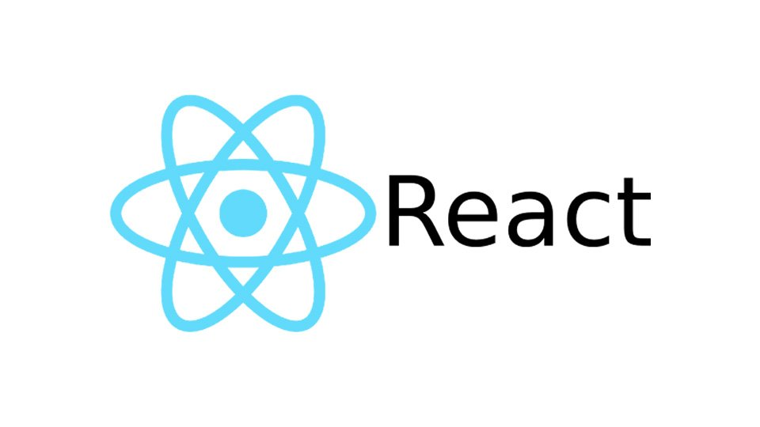

Last Updated: 16-07-2019
***NOTE: NEED NPM INSTALLED, REFER BACK TO NODE.JS DOCUMENTATION***
Step 1. Install React.
Execute the following command.
$ npm install -g create-react-app
This will install React.js globally.
Step 2. Verify installation
$ create-react-app --version
Step 3. Create the Workspace.
$ create-react-app my-app
Go to the workspace that you created (For this example "my-app").
$ cd my-app
To start the React server execute the following command.
$ npm start
The default should be http://localhost:8080/.
Last Updated: 16-07-2019
***NOTE: NEED NPM INSTALLED, REFER BACK TO NODE.JS DOCUMENTATION***
Step 1. Install React.
Execute the following command.
C:\ npm install -g create-react-app
This will install React.js globally.
Step 2. Verify installation
C:\ create-react-app --version
Step 3. Create the Workspace.
C:\ create-react-app my-app
Go to the workspace that you created (For this example "my-app").
C:\ cd my-app
To start the React server execute the following command.
C:\ npm start
The default should be http://localhost:8080/.